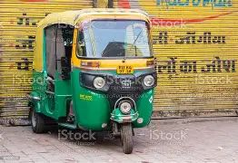

Local Transport
Visitors can move around the city using the following local transport options:
- Auto Rickshaws
- Taxis
- City Buses


Nearby pilgrimage towns like Pandharpur and Akkalkot are easily accessible by road.
Solapur is well connected by highways to major cities such as Pune, Mumbai, Hyderabad, and Bengaluru. Regular government and private buses operate between these cities.
Solapur Railway Station is a major railway junction. Many trains connect Solapur to cities like Mumbai, Pune, Hyderabad, Chennai, and Bengaluru. Rail travel is one of the most convenient ways to reach the city.
Solapur has a small airport but limited flight services. The nearest major airports are:
Travelers can reach Solapur from these airports by road or train.
Visitors can move around the city using the following local transport options:

Nearby pilgrimage towns like Pandharpur and Akkalkot are easily accessible by road.